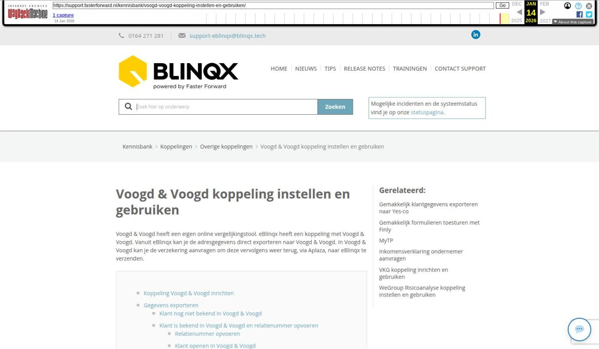

Voogd & Voogd koppeling instellen en gebruiken

Tekstinhoud
Voogd & Voogd koppeling instellen en gebruiken | Support
---
Voogd & Voogd koppeling instellen en gebruiken
Voogd & Voogd heeft een eigen online vergelijkingstool. eBlinqx heeft een koppeling met Voogd & Voogd. Vanuit eBlinqx kan je de adresgegevens direct exporteren naar Voogd & Voogd. In Voogd & Voogd kan je de verzekering aanvragen om deze vervolgens weer terug, via Aplaza, naar eBlinqx te verzenden.
Koppeling Voogd & Voogd inrichten
Gegevens exporteren
Klant nog niet bekend in Voogd & Voogd
Klant is bekend in Voogd & Voogd en relatienummer opvoeren
Relatienummer opvoeren
Klant openen in Voogd & Voogd
Inloggen Voogd & Voogd
Pakket afsluiten en opvoeren in eBlinqx
Dossierhistorie
Koppeling Voogd & Voogd inrichten
Om gebruik te kunnen maken van de koppeling moet er een recht aangezet worden. Daarnaast moet er een specifiek CRM kenmerk aangemaakt worden in de omgeving. Wil je gebruik maken van de koppeling? Stuur dan een e-mail naar support-eblinqx@blinqx.tech en geef hierin aan wie met de koppeling mogen werken.
Gegevens exporteren
Wanneer je eBlinqx en Voogd & Voogd gebruikt, stellen wij het tabblad 'Voogd & Voogd' in. Dit tabblad is dan zichtbaar in ieder klantdossier onder het tabblad Export.
Klant nog niet bekend in Voogd & Voogd
Onder het tabblad Export – Voogd & Voogd staat de knop 'Start nieuwe berekening in Voogd & Voogd'. Je kiest eerst welk adres je wilt exporteren en vervolgens klikt je hierop om een nieuwe berekening te starten in Voogd & Voogd. De online verzekeringstool wordt in een nieuw tabblad geopend.
Klant is bekend in Voogd & Voogd en relatienummer opvoeren
Als de klant al bekend is in Voogd & Voogd dan moet je het relatienummer als CRM kenmerk handmatig opvoeren in het dossier. Indien het relatienummer niet in het dossier staat verschijnt er een blauwe melding onder het tabblad Voogd & Voogd met daarbij een link waar je deze kunt opvoeren.
Relatienummer opvoeren
Het relatienummer voer je op via de link in bovenstaande melding of via het tabblad Startpagina – tabblad CRM – CRM kenmerken klanten – groene plusicoon achter de betreffende persoon.
Hier kies je voor het kenmerk Voogd & Voogd Klantnummer en je vult het relatienummer in. Je slaat op met het opslaanicoon.
Is deze nog niet in jouw omgeving aanwezig dan kan je deze aanmaken, indien je de juiste rechten hebt, via Beheer – CRM beheer – Kenmerkenbeheer. Let op: het kenmerk moet exact Voogd & Voogd Klantnummer heten!
Klant openen in Voogd & Voogd
Wanneer het relatienummer is opgevoerd in het klantdossier dan kan je via het tabblad Voogd & Voogd een nieuwe berekening starten of de klant openen in de vergelijkingstool. Als er onder de eerste aanvrager geen relatienummer is opgevoerd, maar onder de partner wel, dan wordt het relatienummer van de partner hiervoor gebruikt. Een nieuwe pagina wordt geopend wanneer je op één van de knoppen klikt.
Inloggen Voogd & Voogd
Bij het klikken op één van de knoppen wordt er een nieuwe pagina geopend. Op deze pagina kan je inloggen met de inloggegevens van Voogd & Voogd. Deze heb je via hen verkregen. Als je eenmaal bent ingelogd, hoef je niet meer iedere keer opnieuw in te loggen.
Pakket afsluiten en opvoeren in eBlinqx
Via de online verzekeringstool kan je een nieuw pakket afsluiten. Het pakket zal je handmatig in eBlinqx moeten aanmaken. Voogd en Voogd stuurt via Aplaza alleen correspondentieberichten en geen offerteberichten.
Dossierhistorie
Zodra je gegevens hebt geëxporteerd naar Voogd & Voogd dan komt dit ook in de dossierhistorie van het dossier te staan.
Laatste update: 21 november 2025
Was deze informatie nuttig?
Ja Nee